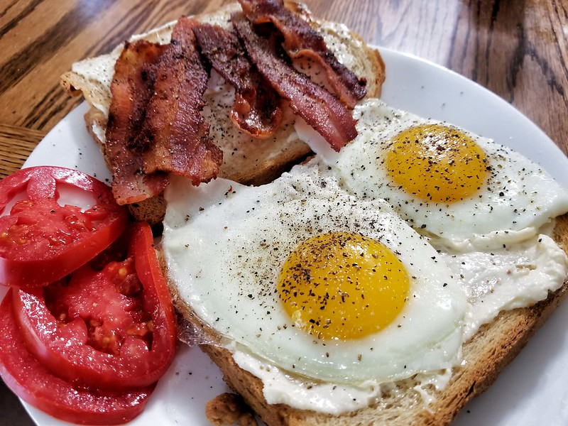

How to make Calcifer's Breakfast from Howl's Moving Castle

Description
Calcifer’s Breakfast from
Howl’s Moving Castle is an iconic American
breakfast with a supernatural twist – bacon and eggs
cooked with the help of a demonic fire called Calcifer.
You may not have a magical co-chef, but you can still
whip up this hearty breakfast in just 3 steps.
Ingredients
- 3 thick cut bacon slices
- 6 eggs
Additional (optional) ingredients
- 1 large onion
- 2 Sourdough bread slices
- 1 tsp thyme
- 1 tsp salt
- Sliced tomato
- 1 tbsp red wine vinegar
Steps to cook:
- Heat the frying pan on low heat and fry the
bacon until browned and slightly crispy.
- Move the bacon to one side of the pan and fry
6 eggs on low heat.
- Serve on a plate when the eggs are cooked to
your preferred doneness.
Optional steps:
- Chop and mince the onion.
- Heat the frying pan on medium heat and fry
the minced onion until slightly transluscent. Add
the sliced of tomato.
- Season everything with thyme, salt and red wine
vinegar and fry for a further 2 minutes.
- Serve together with egg, bacon and Sourdough
bread for a hearty delicious breakfast!
